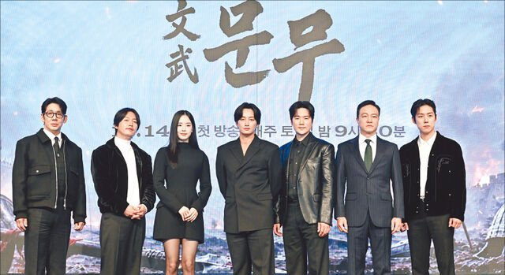
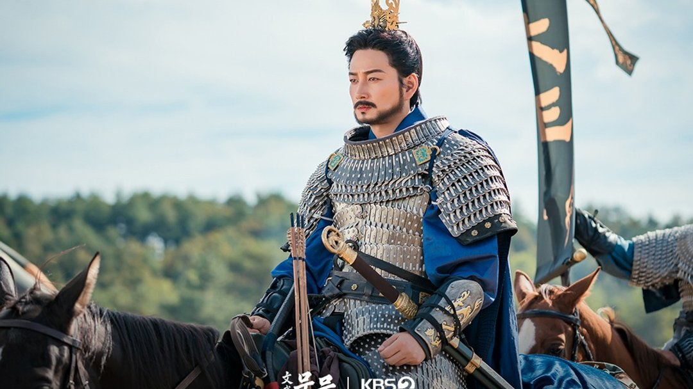
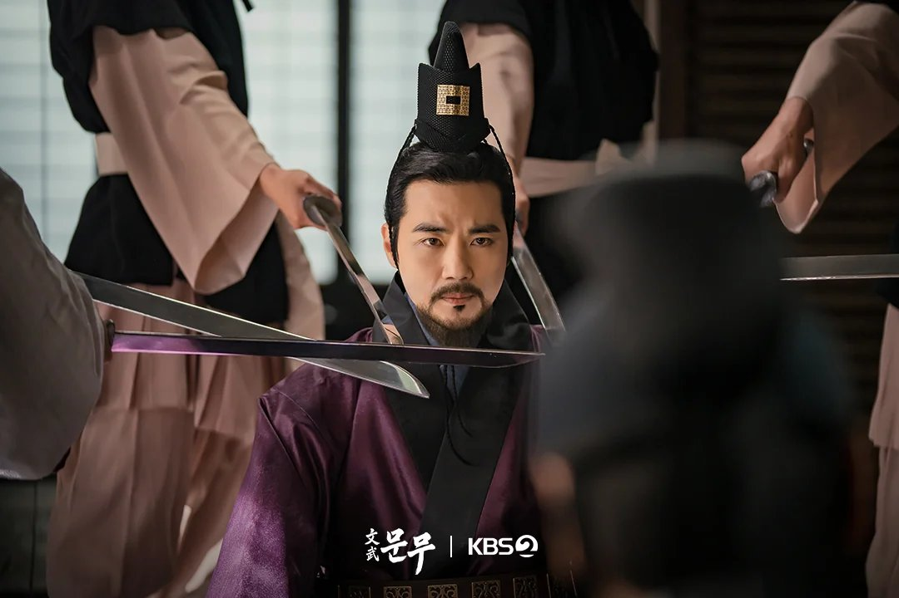
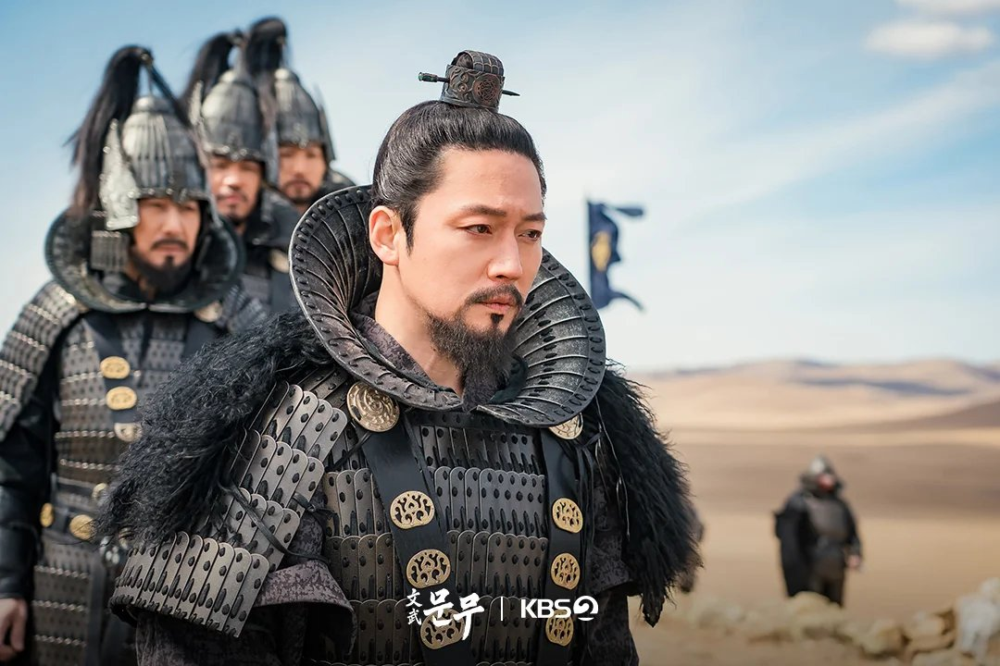
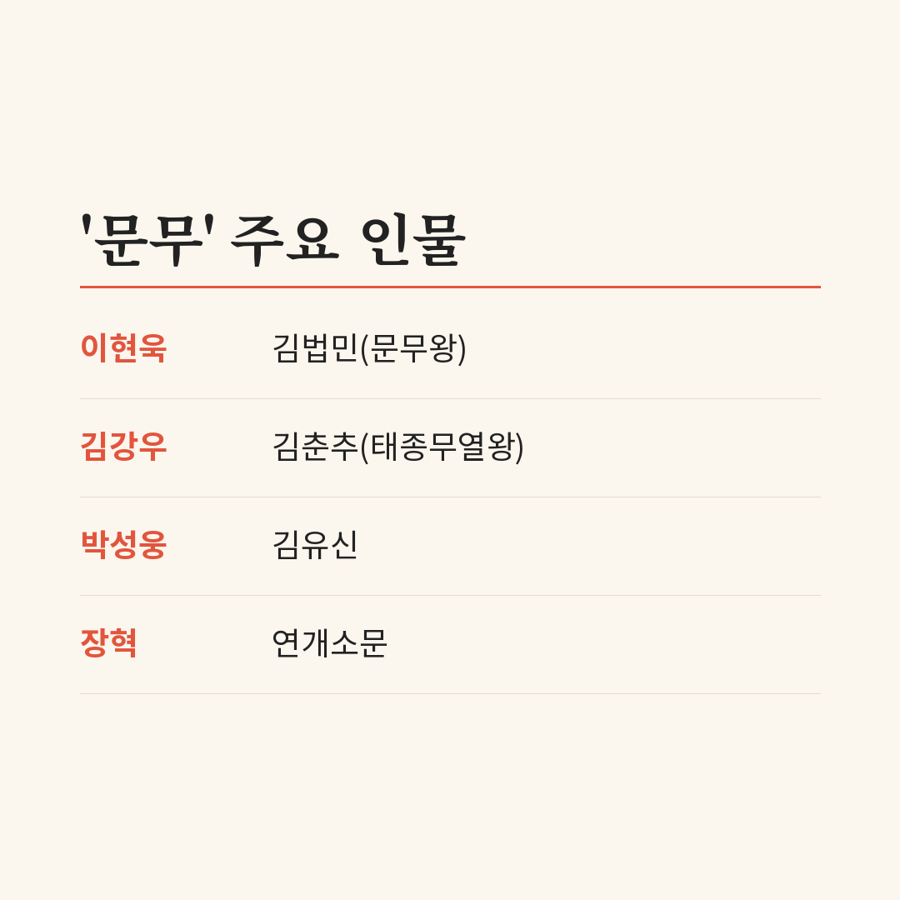
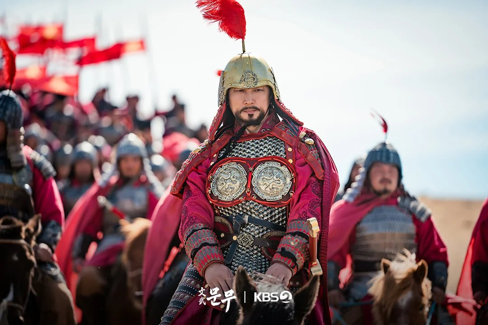
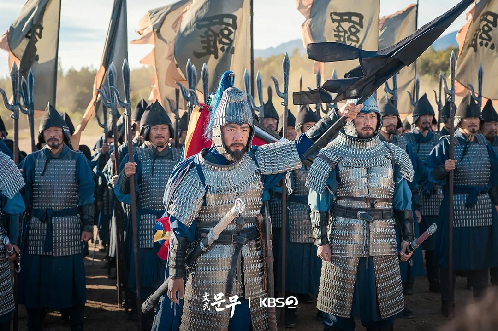

연개소문, 김춘추, 김유신. 교과서에서 익숙한 이름들 사이에 정작 주인공은 덜 알려진 왕이에요. KBS 대하드라마 '문무'는 신라 문무왕 김법민을 중심에 세웠어요. 14일 첫 방송 전에 누가 누구인지, 어떤 전투가 나오는지 정리했어요.
📷 사진 1 자리
▲ KBS 2TV 대하드라마 '문무' 제작발표회에 나선 배우들 · 사진=KBS 제공
아버지를 이해하지 못한 아들, 김법민
이현욱이 맡은 김법민은 처음부터 영웅이 아니에요. 살아남으려고 굴욕도 마다하지 않는 아버지 김춘추의 방식을 쉽게 받아들이지 못하는 인물로 출발해요. 전쟁으로 무너져 가는 나라를 보고 나서야 아버지의 뜻을 이해하게 되죠.
📷 사진 2 자리
▲ '문무' 공식 스틸, 갑옷 차림으로 말에 오른 장수 · 사진=KBS 제공
이현욱은 문무왕을 "절제의 달인"이라고 표현했어요. 전쟁을 싫어하고 자유롭게 살던 사람이 나라를 지키기로 마음먹는 과정을 어떻게 보여 줄지가 가장 큰 고민이었다고 해요.
이호 CP가 문무왕을 고른 이유도 여기 있어요. 연개소문이나 김춘추, 의자왕은 많이 다뤄졌지만 문무왕은 덜 알려졌고, 신라가 당나라를 어떻게 몰아냈는지도 잘 모른다는 설명이에요.
▶ 영상 1 자리
말로 싸운 아버지, 칼을 겨눈 맞수
김춘추는 김강우가 연기해요. 칼 대신 말로 당나라와 왜를 오가며 상대를 설득해야 했던 인물이죠. 김강우는 경주의 무열왕릉까지 찾아가 꿈에 한 번만 나타나 달라고 빌었는데, 끝내 나오지 않았다고 털어놨어요.
📷 사진 3 자리
▲ '문무' 공식 스틸, 칼끝이 겨눠진 궁궐 장면 · 사진=KBS 제공
김법민에게 전장의 통솔력을 가르치는 사람은 박성웅의 김유신이에요. 고구려 쪽에서는 장혁이 연개소문을 맡았어요. 이달 초 공개된 예고에서 연개소문이 김춘추에게 칼을 겨누며 "죽을 준비가 되었는가"라고 묻는 장면이 먼저 나왔어요.
📷 사진 4 자리
▲ '문무' 공식 스틸, 장수들을 이끄는 갑옷 차림의 인물 · 사진=KBS 제공
정리하면 아버지 김춘추, 아들 김법민, 스승 김유신, 맞수 연개소문. 이 네 사람이 첫 회부터 움직이는 축이에요.
📷 사진 5 자리
주필산에서 기벌포까지, AI가 들어간 세 전투
'문무'가 예고한 큰 전투는 주필산, 매소성, 기벌포 세 곳이에요. 주필산은 고구려가 당나라 대군과 맞선 전투고, 매소성과 기벌포는 신라가 당나라를 한반도에서 몰아낸 나당전쟁의 마지막 싸움이에요. 순서대로 따라가면 고구려의 시간에서 신라의 시간으로 넘어가는 셈이죠.
📷 사진 6 자리
▲ '문무' 공식 스틸, 붉은 갑옷의 장수와 기마병 · 사진=KBS 제공
이 세 전투에 AI 기술이 들어갔어요. 위험하거나 기존 방식으로 찍기 어려운 장면에 썼고, 기획부터 촬영까지 1년 반 동안 기술이 계속 발전해 새 기능이 나올 때마다 적용했다고 해요.
▶ 영상 2 자리
제작비는 약 300억 원이에요. 고구려, 백제, 신라, 당나라를 모두 제대로 보여 주려면 그만큼 필요했다는 게 제작진 설명이에요. 고증 논란을 피하려고 다른 대하드라마보다 자문 교수를 많이 두고 장면마다 함께 회의했다고 밝혔어요.
📷 사진 7 자리
▲ '문무' 공식 스틸, 깃발 아래 늘어선 군대 · 사진=KBS 제공
대하사극이 오랜만이라면
'문무'는 KBS의 35번째 대하사극이에요. '고려거란전쟁' 이후 처음 나오는 대하드라마로, 28부작 안에 삼국통일과 나당전쟁을 담아요.
볼거리는 두 갈래예요. 한쪽은 아버지와 아들의 생각이 부딪히는 정치극이고, 다른 한쪽은 AI를 더한 대규모 전투 장면이에요.
▶ 영상 3 자리
'고려거란전쟁'처럼 전쟁과 외교가 함께 가는 사극을 좋아했다면 맞을 작품이에요. 삼국통일을 김춘추나 김유신이 아니라 그다음 세대의 눈으로 보고 싶은 분께도 권해요.
정리하면서 눈에 띈 건 세 전투의 배치였어요. 주필산이 고구려의 싸움이라 초반 주인공은 연개소문처럼 보일 수 있지만, 매소성과 기벌포까지 가야 김법민의 이야기가 완성되는 구조라 초반 몇 회만 보고 판단하지 않는 게 좋겠어요.
'문무'는 아버지와 다른 길을 걷던 김법민이 통일의 왕이 되기까지를 따라가는 드라마예요. 11월 14일(토) 밤 9시 20분 KBS 2TV에서 첫 방송하고, 다음 날인 15일(일) 저녁 8시 10분 KBS 1TV '역사스페셜 시간여행자'에서 문무왕 2부작의 2부가 방송돼요.






